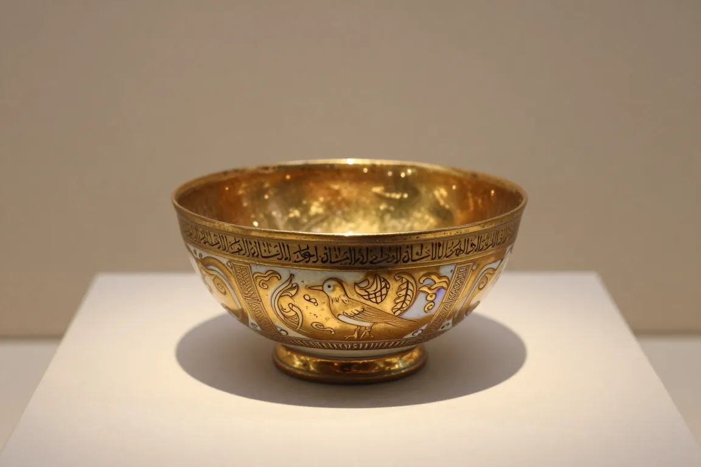

Первая керамика с металлическим блеском. Гончары аббасидского Ирака расписывали оксидами меди и серебра непрозрачную белую оловянную глазурь и обжигали в дыму до золотисто-коричневого блеска.

Главная идея
Дешёвый глиняный горшок способен блестеть как металл, когда белая оловянная глазурь и тонкая плёнка восстановленных серебра и меди превращаются в золотое зеркало.
Принципы дизайна
Покрывайте черепок из гончарной глины непрозрачной белой оловянной глазурью толщиной 0,5–1 мм.
Сначала обжигайте глазурь, затем пишите по ней оксидами металлов на уксусе или охре.
Обжигайте второй раз при 600–700 °C в дымной восстановительной печи, чтобы образовалась металлическая плёнка.
Полируйте остывшую поверхность, чтобы убрать остаток красной глины и показать золотисто-коричневый блеск.
Заполняйте поверхность геометрическими поясами, птицами, растительными завитками и куфическим письмом.
Оставляйте тёмный фон со светлыми мотивами или наоборот, в двух чётких тонах.
Держите форму простой: расширяющаяся чаша на низком кольце-поддоне, чтобы блеск ловил свет.
Антипаттерны
Плоская матовая поверхность без металлического отражения
Кобальтовая синь или цветная глазурь под люстром в больших количествах
Фигурные сцены в реалистичной перспективе
Толстая грубая стенка без ясного поддона
Сусальное золото или накладная позолота вместо настоящего люстра